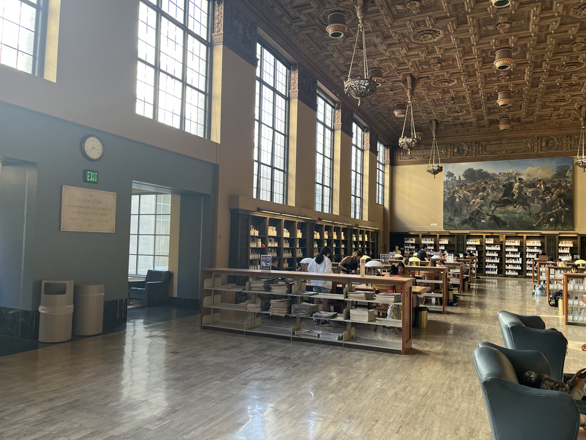

Project Three (Part A): Image Warping and Mosaicing
A.1: Shoot the Pictures
The following images are unedited photos taken from the same center of project. Later this project, they will be stitched together into a mosaic.
View of Apartment
Campanile
Inside Doe Library

A.2: Recover Homographies
Outside Doe Library
The following matrix is the system of equations used to derive the homography matrix for the outside of doe image:
[[ 8.14000e+02 1.54000e+02 1.00000e+00 0.00000e+00 0.00000e+00 0.00000e+00 -6.62596e+05 -1.25356e+05]
[ 0.00000e+00 0.00000e+00 0.00000e+00 8.14000e+02 1.54000e+02 1.00000e+00 -1.25356e+05 -2.37160e+04]
[ 2.18000e+02 3.03000e+02 1.00000e+00 0.00000e+00 0.00000e+00 0.00000e+00 -4.57800e+04 -6.36300e+04]
[ 0.00000e+00 0.00000e+00 0.00000e+00 2.18000e+02 3.03000e+02 1.00000e+00 -3.35720e+04 -4.66620e+04]
[ 8.22000e+02 3.17000e+02 1.00000e+00 0.00000e+00 0.00000e+00 0.00000e+00 -6.75684e+05 -2.60574e+05]
[ 0.00000e+00 0.00000e+00 0.00000e+00 8.22000e+02 3.17000e+02 1.00000e+00 -2.60574e+05 -1.00489e+05]
[ 2.15000e+02 3.89000e+02 1.00000e+00 0.00000e+00 0.00000e+00 0.00000e+00 -4.51500e+04 -8.16900e+04]
[ 0.00000e+00 0.00000e+00 0.00000e+00 2.15000e+02 3.89000e+02 1.00000e+00 -6.81550e+04 -1.23313e+05]]
The following matrix is the homography matrix for the outside of doe image:
[[ 3.50127679e+00 1.17416658e-01 -4.76550389e+02]
[ 1.09761736e+00 2.94011877e+00 -8.93779426e+02]
[ 2.36950956e-03 6.01768141e-05 1.00000000e+00]]
Flagpole
The following matrix is the system of equations used to derive the homography matrix for the flagpole image:
[[ 3.67000e+02 2.14000e+02 1.00000e+00 0.00000e+00 0.00000e+00 0.00000e+00 -1.35056e+05 -7.87520e+04]
[ 0.00000e+00 0.00000e+00 0.00000e+00 3.67000e+02 2.14000e+02 1.00000e+00 -7.74370e+04 -4.51540e+04]
[ 3.73000e+02 4.52000e+02 1.00000e+00 0.00000e+00 0.00000e+00 0.00000e+00 -1.39502e+05 -1.69048e+05]
[ 0.00000e+00 0.00000e+00 0.00000e+00 3.73000e+02 4.52000e+02 1.00000e+00 -1.67850e+05 -2.03400e+05]
[ 4.62000e+02 2.82000e+02 1.00000e+00 0.00000e+00 0.00000e+00 0.00000e+00 -2.17140e+05 -1.32540e+05]
[ 0.00000e+00 0.00000e+00 0.00000e+00 4.62000e+02 2.82000e+02 1.00000e+00 -9.88680e+04 -6.03480e+04]
[ 4.89000e+02 5.09000e+02 1.00000e+00 0.00000e+00 0.00000e+00 0.00000e+00 -2.37654e+05 -2.47374e+05]
[ 0.00000e+00 0.00000e+00 0.00000e+00 4.89000e+02 5.09000e+02 1.00000e+00 -2.20050e+05 -2.29050e+05]]
The following matrix is the homography matrix for the flagpole image:
[[ 3.84188115e-01 1.76378290e-01 9.66247813e+01]
[-8.06176560e-01 9.72922979e-01 2.45548207e+02]
[-9.60691909e-04 4.71276666e-04 1.00000000e+00]]
A.3: Warp the Images
These are rectifications of images using bilinear and nearest neighbors interpolation. While similar, bilinear creates more robust outputs where as nearest neighbors has a more blocky result, especially in smaller images.
Outside of Doe (Regular, Bilinear, Nearest Neighbors)

Flagpole (Regular, Bilinear, Nearest Neighbors)
A.4: Blend the Images into a Mosaic
Below are 3 mosaics. The process to create mosaics are as follows: First take photos of a scene from the same fixed center of projection. Then, map points between one image and a neigboring images. Using those correspondences, derive a homography and project the latter image onto the plane of the orignal image. In order to blend these two images, create a mask over the shape of each image on the same plane, making each point equal to the shortest distance from that point to an edge, then normalized. Then, binarize the masks: for each point, if the value in mask 1 is larger than the value in mask 2, set mask 1 to 1 and mask 2 to 0 for that point. Then create a blurred mask for each image, which is just its binary mask with a guassian applied to it. Finally, apply the guassian masks to their corresponding images' lower frequencies and the regular binary masks to the higher frequencies and combine everything. Repeat for each additional image in the mosaic.
View of Apartments

Campanile

Inside Doe Library